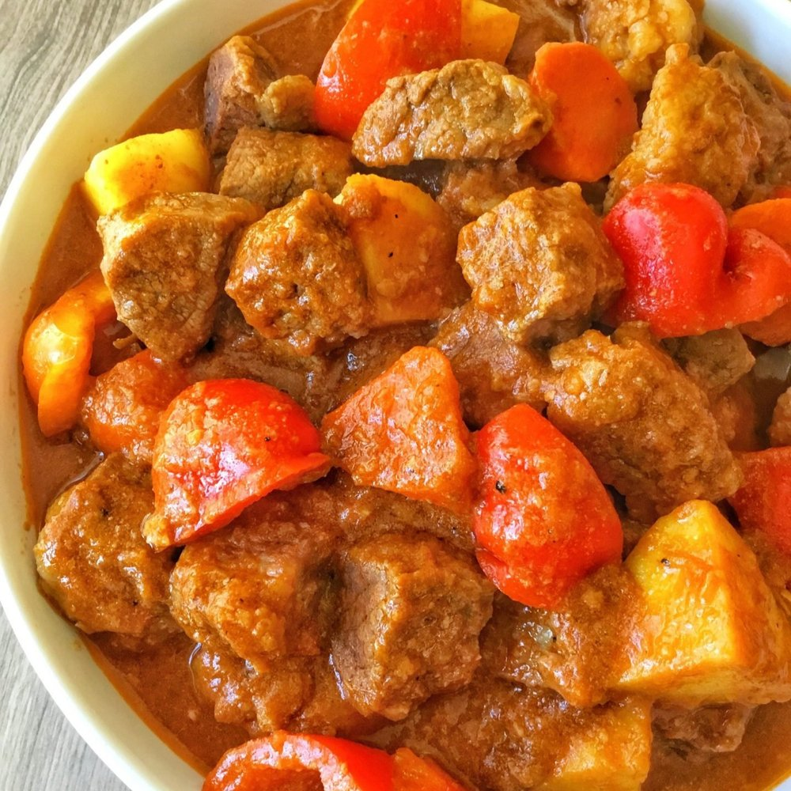

Beef Caldereta with Rice

Steamed Rice with Beef Caldereta Soup
Ingredients
- Beef Cut
- Vinegar
- Tomatoes
- Potatoes
- Ketchup
- Rice
- Garlic
- Cook the rice
- Boil the beef
- Mix the vinegar
- Steam the tomatoes and potatoes
- Mince the garlic
- Put in pot and add some ketchup